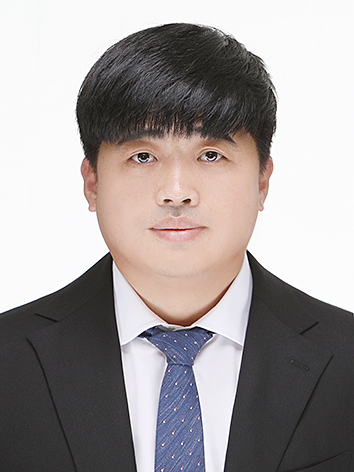

박종환Jong-Hwan Park, Ph.D.
동아대학교 스마트그린자원학과 · 대학원 응용생명과학과
전공
농업환경학직위
조교수 · 동아대학교 스마트그린자원학과학력
- 2015경상대학교 대학원 응용생명과학부 박사Ph.D., Applied Life Science, Gyeongsang National University
- 2011경상대학교 대학원 응용생명과학부 석사M.S., Applied Life Science, Gyeongsang National University
- 2009경상대학교 환경생명화학과 학사B.S., Environmental and Biological Chemistry, Gyeongsang National University
경력
- 2021.09 – 현재동아대학교 스마트그린자원학과 조교수(前 생명자원산업학과)
- 2019.01 – 2021.08경상대학교 농업생명과학연구원 학술연구교수
- 2016.09 – 2018.12루이지애나 주립대학교 박사 후 연구원Louisiana State University, Dept. of Plant, Environmental and Soil Sciences
(Jim J. Wang 교수 연구팀) - 2013.08 – 2016.08경남과학기술대학교 시간강사
수상
- 2024동아대학교 우수 강의 교수상